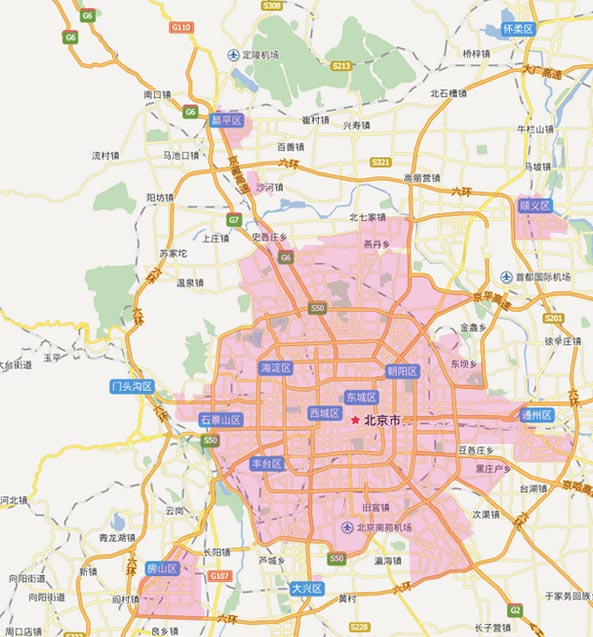
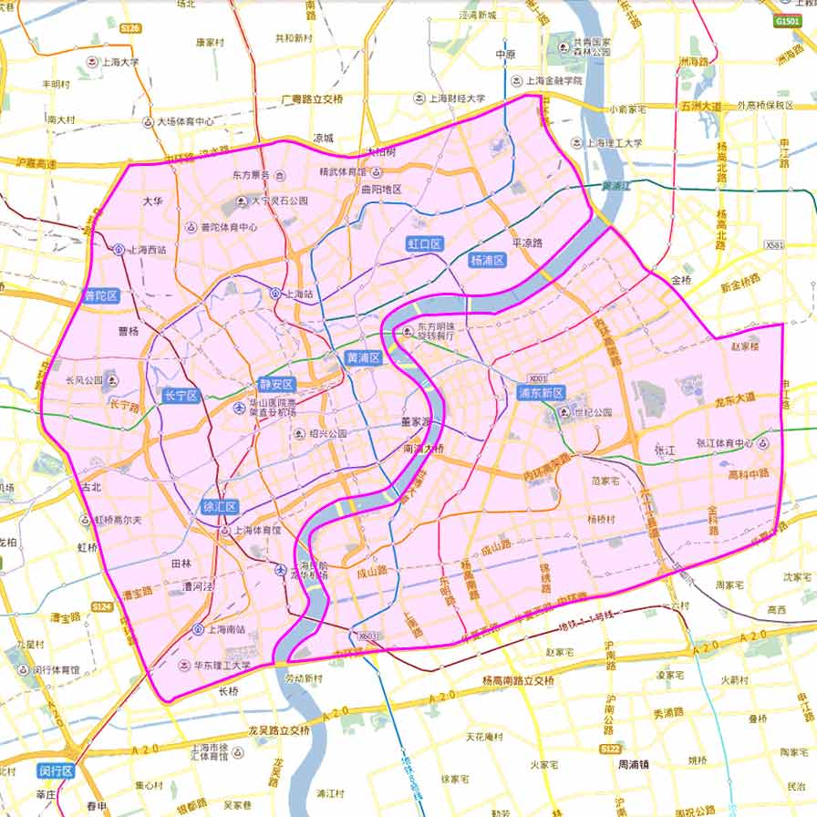
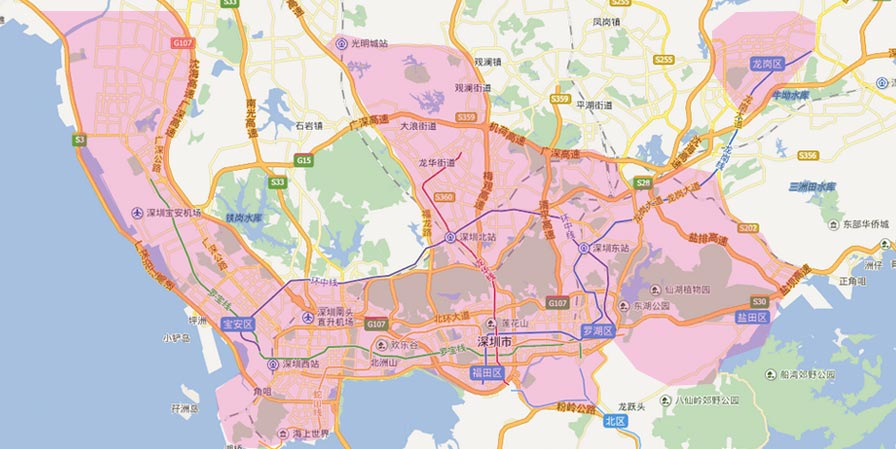
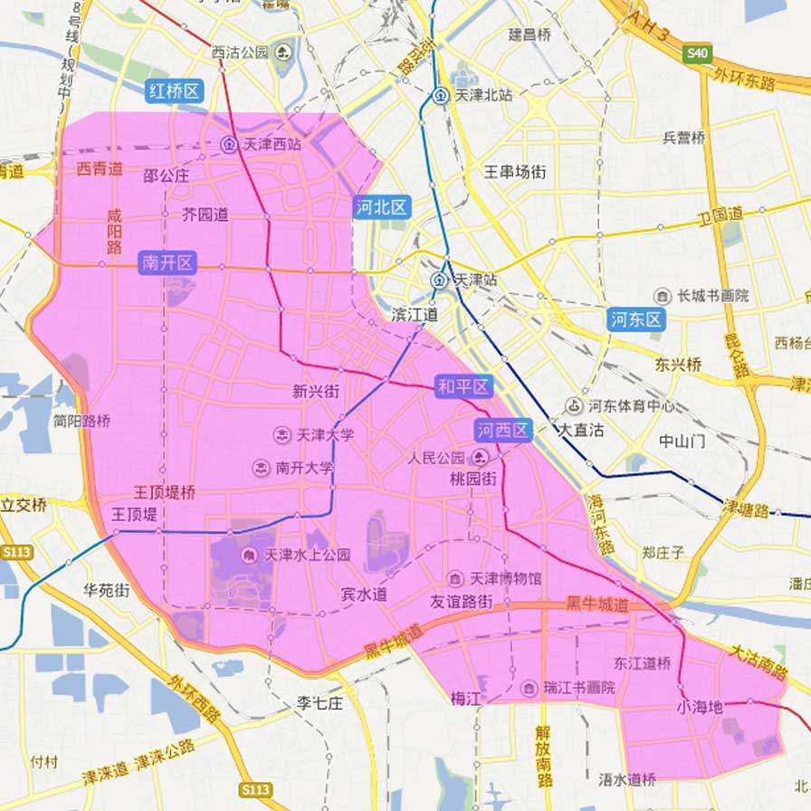
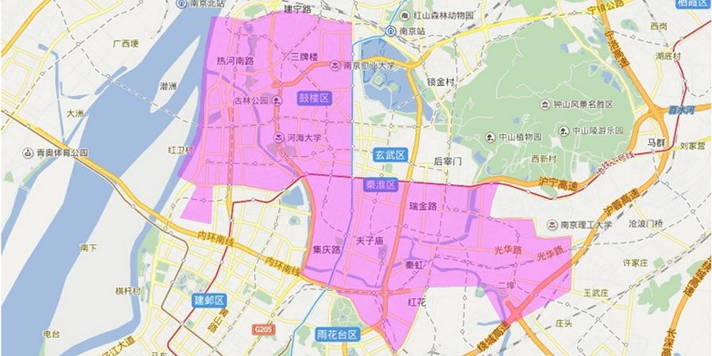
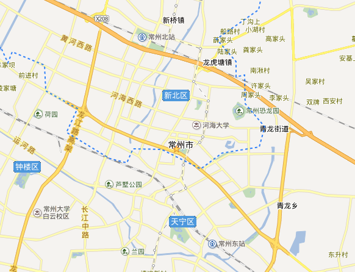

北京（具体服务范围：五环内全境覆盖；五环外覆盖以下区域：海淀区上地、清河、西二旗地区；昌平区天通苑、回龙观地区；朝阳区北苑、东坝、管庄、双桥、二外、传媒大学地区 ；通州区，通州城区；大兴区黄村&亦庄开发区西区；石景山区古城以东区域；顺义县城；昌平县城；良乡大学城；沙河大学城）

上海（目前开通中环以内）

深圳深圳（具体服务区域为：南山区全区；福田区全区；罗湖区全区；宝安区（仅限宝安中心，西乡街道，新安街道，民治街道，龙华街道，福永镇，沙井镇，观澜镇）；龙岗区（仅限龙城街道，龙岗中心城，爱联，南联，陇西，五联，横岗镇，布吉镇，坂田镇）；盐田区预计4月中旬开通

天津（目前开通南开区、河西区、和平区、红桥区、河北区、河东区）

南京市（具体服务范围：秦淮区（大校场机场以南除外），鼓楼区（建宁路以南））

常州市（具体服务范围：西新桥（西上园除外），新北区（薛家镇除外））
